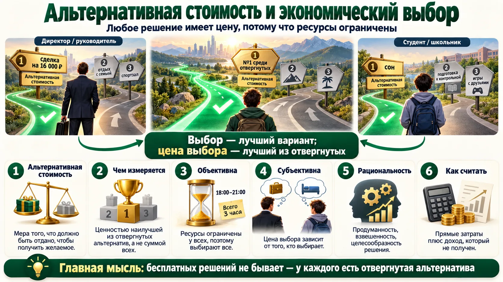
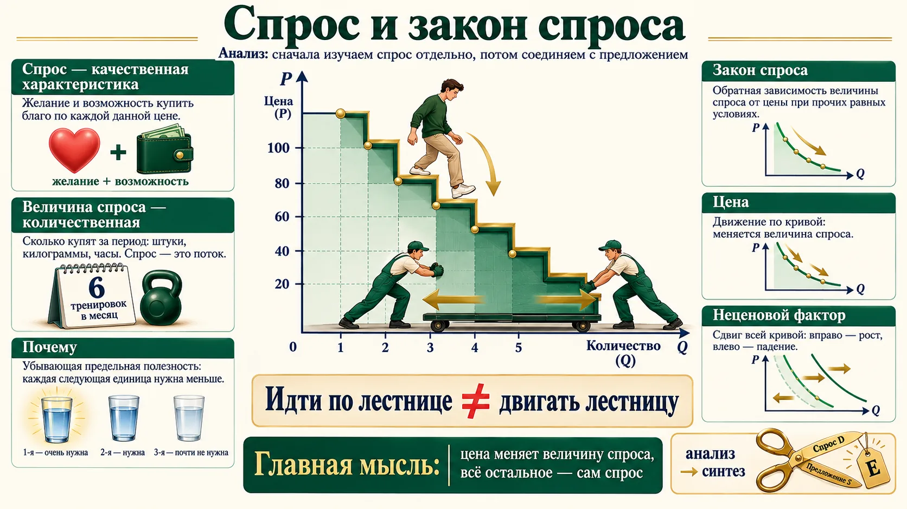
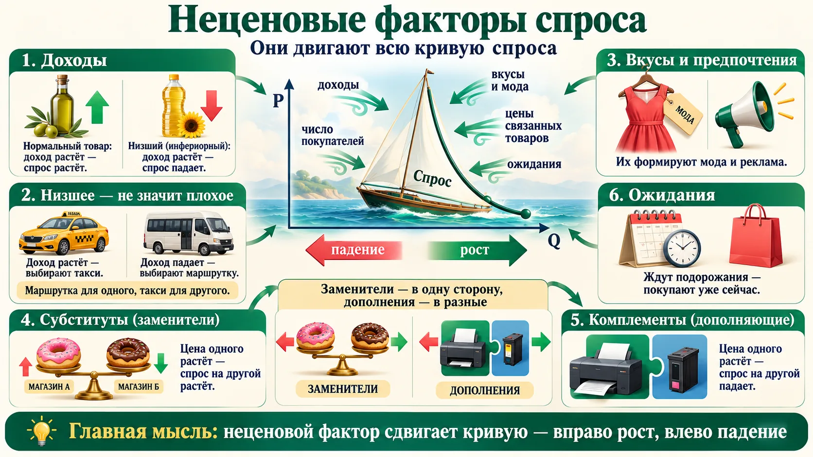
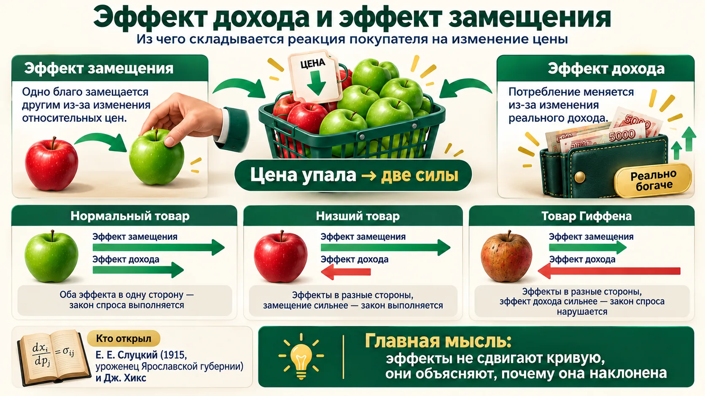
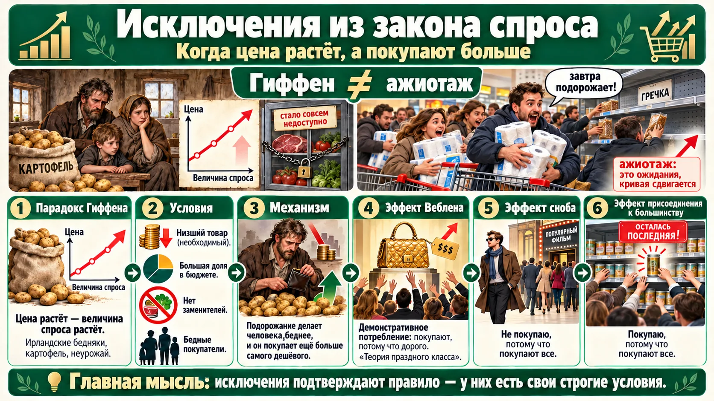
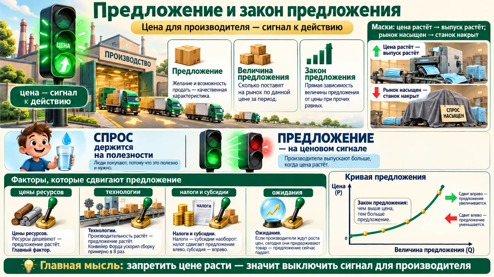
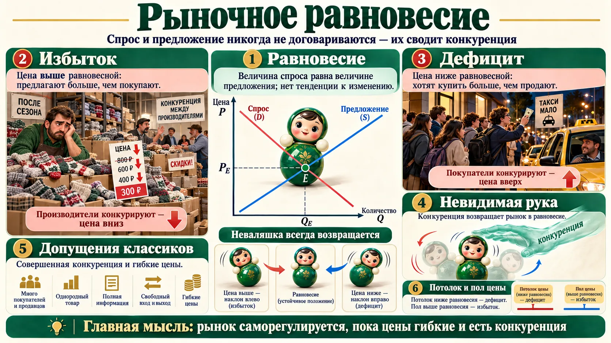
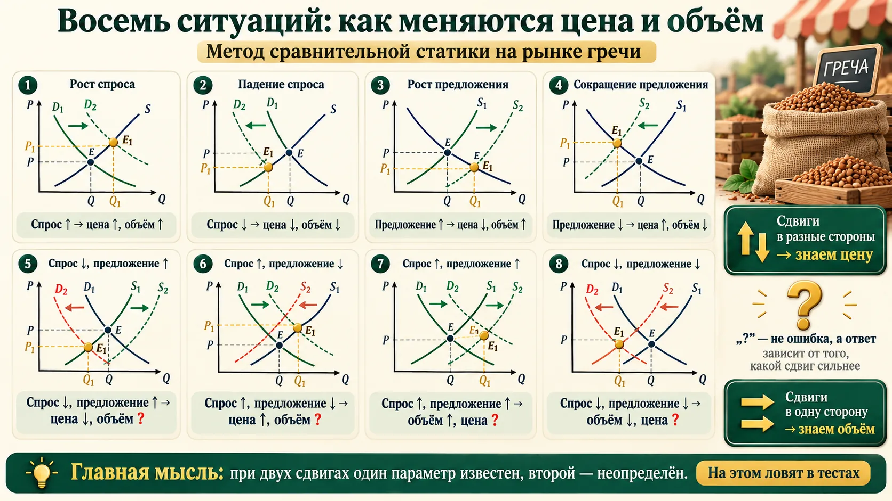
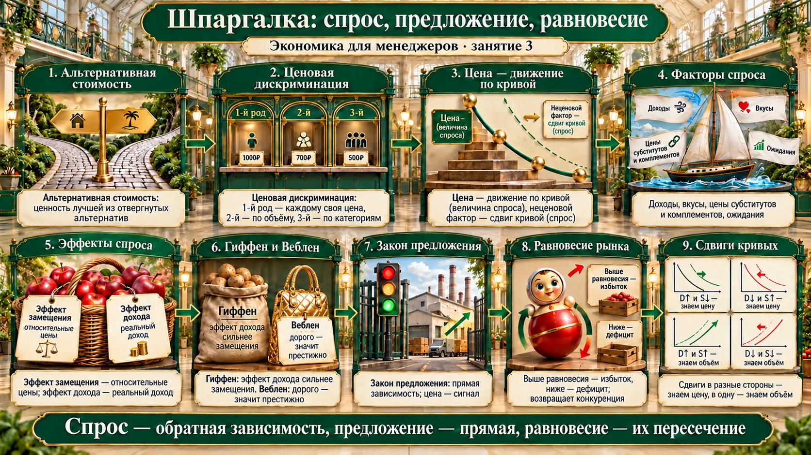

Альтернативная стоимость и экономический выбор
Три часа на лекции стоят не ноль: за них вы отказались от чего-то другого. Лучшее из отвергнутого и есть цена вашего выбора.

Объективна и субъективна одновременно
Объективна: ресурсы ограничены у всех, поэтому выбирают все. Субъективна: цена выбора зависит от того, кто выбирает.
Пример преподавателя: её альтернатива занятию — подготовка к лекции в магистратуре; спортзал и прогулка с собакой — дальше по списку. В деньгах: 4 часа пары — 3 200 ₽, а премиальное репетиторство за те же 4 часа — 16 000 ₽. Она выбирает пару: обязательства, перспектива, «быть в креативной среде». Мотивы рационального выбора не обязаны быть денежными.
Рациональность и экономический выбор
Рациональность — продуманность, взвешенность, целесообразность в принятии управленческих решений.
Преподаватель продиктовала: «Экономический выбор — выбор наилучшей из отвергнутых альтернатив» и предупредила, что говорить «из упущенных» нельзя: выбранное не упущено.
«Выбор» и «цена выбора» — разные вещи
- Выбирают лучший вариант из всех доступных. Цена выбора (альтернативная стоимость) — лучший из отвергнутых. Формулировку с лекции разумно читать так: выбор оценивается через наилучшую из отвергнутых альтернатив.
- В российских учебниках и тестах стандартен термин «издержки упущенных возможностей» — ценность наилучшей упущенной альтернативы. Если в тесте так написано, это верный ответ.
- Альтернативная стоимость — только одна, лучшая отвергнутая альтернатива, а не сумма всех.
Сначала решите сами
- Инна могла работать за 5–10 ₽ в час, выбрала работу инженера-исследователя за 7 ₽ в час и заключила контракт на год. Какова альтернативная стоимость часа свободного времени в течение рабочего дня?
- Работа за 4–8 ₽ в час доступна только с 9 до 18, других возможностей нет. Какова альтернативная стоимость часа свободного времени с 20:00 до 8:00?
- Москва — Красноярск: самолёт — сутки и 1 000 ₽, поезд — 4 дня и 580 ₽. Сколько инженер должен зарабатывать в будний день (получает, только если работает), чтобы ему было всё равно?
Ответы и разбор
1. 7 ₽. Свободный час в рабочий день — это час, когда она не на своей работе. Контракт заключён, место за 10 ₽ ей больше не доступно.
2. Ноль. Ночью оплачиваемой альтернативы нет — отказываться не от чего.
3. 140 ₽. Полная цена = билет + неполученный заработок. «Всё равно» — знак равенства: 1 000 + x = 580 + 4x → 420 = 3x → x = 140.
Считайте полную цену решения
- «Сэкономим на подрядчике — сделаем сами»: добавьте к смете часы своих сотрудников, умноженные на то, что они принесли бы на основной работе.
- Командировка поездом вместо самолёта дешевле только для того, чьё время дешевле разницы в билетах. Для руководителя чаще наоборот.
- Деньги на счёте не бесплатны: их альтернатива — хотя бы ставка по депозиту. Проект, который приносит меньше, проигрывает «ничегонеделанию».
Ценовая дискриминация
Почему билет с ночёвкой на выходные дешевле, а купоны вырезают одни и те же люди: у разных покупателей разная альтернативная стоимость времени.
1-го рода (совершенная)
Каждому покупателю — своя цена. Клиента видят в лицо: репетиторы, стоматологи, косметологи, адвокаты. Восточный базар без ценников — продавец в торге нащупывает предел, сколько вы готовы заплатить. Цена может отклоняться и вниз.
2-го рода
Цена зависит от объёма покупки. Фирма не видит покупателя, но знает, что за большой объём он готов платить меньше за единицу: тарифы связи и интернета, подписки, пакеты.
3-го рода
Цена зависит от категории покупателя. Пенсионная скидка в определённые часы, студенческий билет в музей, абонемент в спортклуб для студентов на 30% дешевле, ночные промокоды для подписчиков телеграм-канала, утренний сеанс в кино.
Авиабилеты и купоны
Билеты дешевле, если пассажир остаётся в пункте назначения на выходные. Деловой пассажир не останется: у него сделка в другом месте, его потери несопоставимы с ценой билета. Отдыхающий останется — для него это и есть отдых. «Это разные потоки», — сформулировал слушатель, и преподаватель согласилась: у потоков разная цена свободного времени.
Купоны вместо скидки для всех. Вырезать купоны будут те, чьё время дешевле (пенсионеры, временно неработающие). Деловой человек придёт и купит без скидки — фирма получает с него полную цену.
Три условия, а не одно
Кроме рыночной власти, для ценовой дискриминации нужно: разделить покупателей на группы с разной готовностью платить (по объёму, возрасту, времени, месту) и не допустить перепродажи — иначе студент купит дешёвый билет и перепродаст его взрослому. Классификацию трёх родов предложил британский экономист Артур Пигу в «Экономической теории благосостояния» (1920).
Источник: N. G. Mankiw, Principles of Economics, гл. «Монополия», раздел «Ценовая дискриминация»; A. C. Pigou, The Economics of Welfare, 1920.
Н. Грегори Мэнкью и «Принципы экономикс»
Гарвардский профессор, в 2003–2005 годах — председатель Совета экономических консультантов при президенте США. Его учебник Principles of Economics (первое издание — 1998) — один из самых распространённых вводных курсов в мире, переведён на русский. Преподаватель рекомендует его для самостоятельного изучения; определение альтернативной стоимости на этом занятии — из Мэнкью.
Разная цена — не всегда дискриминация
Если товар отличается качеством, комплектацией или местом и временем доставки, разная цена — это разные товары, а не ценовая дискриминация. Поэтому пример слушателя с дорогой бутылкой воды в аэропорту спорен: там продают «воду здесь и сейчас», платят за аренду в терминале, а конкуренция ограничена. Классический пример — один и тот же товар для разных групп.
Как это использовать честно
- Сегментируйте по готовности платить: тарифы «базовый / бизнес», скидка за объём, льготы для студентов — так вы забираете выручку, которую иначе отдали бы конкуренту.
- Закройте перепродажу: именные абонементы, привязка промокода к аккаунту.
- Не путайте с обманом: скрытые наценки «для своих» и разные цены за одинаковый товар в одном канале бьют по доверию — и подпадают под антимонопольное регулирование, если у компании доминирующее положение.
Спрос, величина спроса и закон спроса
Центральная тема микроэкономики. Сначала — анализ: изучаем спрос отдельно от предложения. Потом — синтез: соединяем их «ножницами Маршалла».

Цена — движение по кривой
Тренировка у любимого тренера стоила 1 500 ₽ — посетитель ходил 6 раз в месяц. Клуб поднял цену — стал ходить 4 раза. Мы перешли из точки A в точку B по той же кривой: изменилась величина спроса, а сам спрос (желание и возможность) — нет.
Полукомбинезон: за полную цену беру один, при скидке за второй — два («одни в город, другие в деревню»). Вторая единица нужна меньше — её купят только дешевле.
Неценовой фактор — сдвиг кривой
«Качество спроса меняется под воздействием неценовых факторов!» Посетитель стал больше зарабатывать: цена та же, 1 500 ₽, но ходит он уже 8 раз. Сдвинулась вся линия D → D1.
Рост — сдвиг вправо, падение — влево («штуки растут вправо»). Цена — всегда по вертикальной оси: это экономическая традиция.
Самая частая путаница темы
- «Цена выросла, и спрос упал» — неверно. Упала величина спроса; спрос не изменился.
- Определение закона без «при прочих равных условиях» — неполное. Преподаватель отдельно подчеркнула: в старых учебниках формулировку обрывали.
- Зависимость обратная: переменные меняются в разные стороны.
Анализ и синтез
Моделирование — основной метод экономической науки, оно строится на допущениях. Анализ — раскладываем рыночный механизм на части и изучаем каждую отдельно по одному плану: понятие и величина → закон → неценовые факторы. Синтез — соединяем спрос и предложение в одной системе координат, чтобы найти параметры равновесия: равновесную цену и равновесный объём (точка E).
«Неоклассический синтез» — термин с двумя значениями
На лекции так назвали соединение спроса и предложения у Маршалла. В большинстве учебников «неоклассический синтез» — это синтез кейнсианства и неоклассики (Хикс, Самуэльсон, 1940–1950-е). Маршалл соединил две теории ценности — по полезности и по издержкам. Если в тесте спросят про автора неоклассического синтеза, скорее всего имеют в виду Самуэльсона.
Альфред Маршалл (1842–1924) и его ножницы
Кембриджский профессор, автор «Принципов экономической науки» (1890) — главного учебника экономики на полвека. Ввёл привычный нам график: цена по вертикали, количество по горизонтали, кривые спроса и предложения крест-накрест.
Его метафора: спорить, что определяет стоимость — полезность (спрос) или издержки производства (предложение), — всё равно что спорить, какое лезвие ножниц режет бумагу, верхнее или нижнее. Режут оба. Это закон 3 в реестре законов.
Читайте продажи правильно
- Продажи упали после повышения цены — это движение по кривой, ожидаемая реакция. Продажи упали при той же цене — сдвинулся сам спрос: ищите неценовую причину (доходы клиентов, конкурент, мода).
- Скидка на второй товар работает из-за убывающей полезности: вторую единицу купят только дешевле.
- Цена — независимая переменная, объём — зависимая. В анализе продаж сначала фиксируйте цену, потом смотрите на объём.
Неценовые факторы спроса
Детерминанты спроса — то, что двигает всю кривую. У преподавателя они выстроены по важности: на первом месте доходы.

1. Доходы потребителей (I)
Главный фактор. Нормальные (качественные) товары: доход растёт — спрос растёт. Низшие (инфериорные) блага: доход растёт — спрос падает.
2. Вкусы и предпочтения
Формируются модой и рекламой; на них работает и нейромаркетолог. Модели мужского поведения из литературы: метросексуал, техносексуал, ретросексуал.
3. Цены связанных товаров
Субституты (заменители): пончики в «Магните» и в «Пятёрочке». Комплементы (дополняющие): принтер и картридж.
4. Ожидания
Ничего ещё не произошло, но покупатели ждут подорожания — спрос растёт уже сегодня. Концепция адаптивных ожиданий — 1950-е годы.
5. Число покупателей
Преподаватель назвала свой перечень исчерпывающим, но в учебниках (Мэнкью, Самуэльсон) есть ещё размер рынка: больше покупателей — спрос растёт. Пример: новый жилой квартал рядом с магазином.
Низшее — не значит плохое
Это реакция на доход, а не оценка качества: для одного — низшее благо, для другого — нормальный товар. Примеры с занятия:
- школьный буфет с булками — столовая с полноценным обедом;
- маршрутка — такси; гараж — дилерский сервис;
- «Пятёрочка» — «Вкусно — и точка» — ресторан (для студента и для привыкшего к ресторанам — по-разному);
- рафинированное подсолнечное масло — оливковое; онлайн-курсы — частный репетитор; секонд-хенд.
В 90-е разорились ателье: у людей не было денег, спрос ушёл на дешёвую массовую одежду.
Заменитель появился — спрос упал
Посетитель ходил к тренеру 6 раз по 1 500 ₽. В клубе открылся бассейн с тренером за 1 200 ₽ — теперь 4 раза к своему и 2 раза в бассейн. Цена его тренера не менялась, а спрос сдвинулся влево: на рынке появился более дешёвый субститут.
| Связь товаров | Что случилось | Спрос на другой товар | Зависимость |
|---|---|---|---|
| Субституты | пончики в «Магните» подешевели | в «Пятёрочке» падает | прямая: цена одного ↓ — спрос на другой ↓ |
| Комплементы | картриджи подешевели | на принтеры растёт | обратная: цена одного ↓ — спрос на другой ↑ |
У комплементов связь обратная
На занятии преподаватель про картриджи и принтеры оговорилась: «зависимость прямая». По теории для дополняющих товаров связь цены одного и спроса на другой — обратная: картриджи дорожают → спрос на принтеры падает. Прямая связь — у заменителей. Сами примеры на занятии разобраны верно.
Карта факторов вашего спроса
- Узнайте, нормальный у вас товар или низший для вашего клиента. Низшее благо растёт в кризис (дискаунтеры, ремонт вместо покупки) и проседает в рост доходов.
- Следите за ценами заменителей и дополнений: подорожал субститут — у вас окно для роста; подорожал комплемент — ждите падения.
- Управляйте ожиданиями: анонс подорожания поднимает спрос сегодня, но «съедает» продажи завтрашнего дня.
Эффект дохода и эффект замещения
Почему при снижении цены покупают больше? Две причины сразу: товар стал относительно дешевле, а покупатель — реально богаче.

Корзина яблок
В корзине X зелёных и Y красных яблок. Зелёные подешевели — теперь их в корзине относительно больше. Это общий эффект, и рациональный покупатель приходит к нему по двум причинам: он замещает дорогие красные дешёвыми зелёными и становится реально богаче — на ту же сумму покупает больше.
| Цена товара упала | Эффект замещения | Эффект дохода | Итог |
|---|---|---|---|
| Нормальный товар | покупают больше | покупают больше | эффекты в одну сторону — закон спроса выполняется |
| Низший товар | покупают больше | покупают меньше | в разные стороны, замещение сильнее — закон выполняется, реакция слабее |
| Товар Гиффена | покупают больше | покупают меньше, и сильнее | эффект дохода перекрывает замещение — закон спроса нарушается |
Эффекты не сдвигают кривую
Эффекты дохода и замещения — реакция на изменение цены, то есть движение по кривой спроса. Они объясняют, почему кривая наклонена вниз (или, у товара Гиффена, вверх). Сдвиг кривой — только от неценовых факторов.
Консервы, хлеб и килька
Одна банка консервов «стоит» 2,5 буханки хлеба: столько хлеба вы не купите, взяв банку. Это альтернативная стоимость, посчитанная через относительные цены.
Кейс с килькой: студенту подняли стипендию до 1 400 (номинально), а килька подорожала относительно хлеба. Он может купить прежнюю корзину, но кильки берёт меньше — её альтернативная стоимость выросла. Это чистый эффект замещения.
Как сократить спрос на мясо, «не заведя ни одной коровы»
Кейс советских экономистов (70-е, дефицит мяса): поднять цену мяса и одновременно пропорционально поднять номинальные доходы. Тогда благосостояние сохраняется, а люди сами заменяют мясо другими продуктами — работает только эффект замещения.
Зачем повышать доходы? Без компенсации люди реально обеднеют, и потребление изменится через бедность, а не через замещение.
Компенсация по Слуцкому — инструмент, а не только история
Подъём номинального дохода ровно настолько, чтобы человек мог купить прежний набор, называют компенсирующим изменением дохода по Слуцкому. Так же устроена индексация зарплат и пенсий на инфляцию: государство пытается сохранить реальный доход, оставив людям сигнал относительных цен.
Источник: E. Slutsky, «Sulla teoria del bilancio del consumatore», Giornale degli Economisti, 1915; J. R. Hicks, Value and Capital, 1939.
Евгений Слуцкий (1880–1948) — наш земляк
Родился в селе Новое Мологского уезда Ярославской губернии. В 1915 году разложил реакцию покупателя на изменение цены на эффект замещения и эффект дохода и записал это уравнением, которое сейчас называют уравнением Слуцкого. Работа на итальянском языке долго оставалась незамеченной, пока её не «переоткрыли» Хикс и Аллен в 1930-е. Позже Слуцкий занимался статистикой и теорией вероятностей.
Джон Хикс (1904–1989) и Нобелевская премия
Британский экономист. В книге «Стоимость и капитал» (1939) развил разложение общего эффекта на эффект замещения и эффект дохода. Нобелевскую премию получил в 1972 году вместе с Кеннетом Эрроу — формально «за новаторский вклад в теорию общего экономического равновесия и теорию благосостояния»; разложение эффектов — часть этой работы. На лекции сказано проще: «за это Хикс получил Нобелевскую премию».
Источник: Нобелевский комитет, 1972.
Две силы скидки
- Скидка на товар, который занимает большую долю бюджета клиента (ипотека, обучение, автомобиль), даёт сильный эффект дохода — клиент «богатеет» и покупает больше смежного.
- Скидка на мелочь работает почти только через замещение — клиент уходит от конкурента, но больше в целом не тратит.
- Если ваш товар для клиента низший, рост его доходов уведёт его к более дорогому аналогу. Готовьте «следующую ступень» в своей линейке.
Исключения из закона спроса: Гиффен, Веблен, сноб и большинство
Бывает, что цена растёт — и покупают больше. Но у каждого исключения свои строгие условия.

Условия товара Гиффена
- это низший товар, товар первой необходимости;
- на него уходит значительная часть бюджета (у бедняка на еду — 80–90% дохода);
- нет заменителей;
- востребован у малообеспеченных.
Маски в пандемию — не товар Гиффена: дешёвые, заменителей нет, но доля в бюджете мала (разбор преподавателя).
Механизм
Картофель подорожал, но мясо, овощи и рыба в неурожай дорожают ещё сильнее. Подорожание основного продукта делает бедняка реально беднее (эффект дохода), и он отказывается от всего дорогого, докупая ещё больше самого дешёвого — картофеля. Эффект замещения тянет в обратную сторону (картофель стал дороже), но эффект дохода сильнее.
Что перекрывает что
- У товара Гиффена эффект дохода сильнее эффекта замещения. На лекции прозвучали обе версии, вторая («замещение перекрывает доход») — оговорка.
- Ажиотаж — не парадокс Гиффена. Гречка, бензин, туалетная бумага «перед подорожанием» — это ожидания, неценовой фактор: кривая спроса сдвигается вправо, а не меняет наклон. Преподаватель отдельно это развела.
- Товар Гиффена — всегда низший, но не каждый низший товар — товар Гиффена.
Нашли ли Гиффена в жизни
Историю об ирландском картофеле привёл Альфред Маршалл в 3-м издании «Принципов» (1895), сославшись на Роберта Гиффена. Позже историки поставили этот случай под сомнение: в годы голода картофеля просто не хватало. Самое известное современное подтверждение — эксперимент Роберта Йенсена и Нолана Миллера (2008): беднейшим семьям в китайской провинции Хунань субсидировали рис, и они стали покупать его меньше, переходя на мясо и овощи. Сами авторы подчёркивают: «Гиффеном» бывает не товар, а поведение конкретных людей в конкретной ситуации. По словам преподавателя, подобные исследования есть и по России 90-х.
Источник: R. Jensen, N. Miller, «Giffen Behavior and Subsistence Consumption», American Economic Review, 98(4), 2008; G. Dwyer, C. Lindsay, «Robert Giffen and the Irish Potato», AER, 1984.
Функциональный и нефункциональный спрос
Функциональный спрос — рациональный, по теории потребительского поведения. Нефункциональный — социальный, спекулятивный, нерациональный. Социальный включает три эффекта (оговорка преподавателя: подход не стандартный, не все учебники с ним согласны):
Эффект присоединения к большинству
Покупаю, потому что покупают все: беру ту банку консервов, которую разобрали; шампунь как у подруги.
Эффект сноба
Не покупаю, потому что покупают все: не пойду на популярный фильм, читаю только нобелевских лауреатов.
Эффект Веблена
Престижное (демонстративное) потребление: покупают, потому что дорого, чтобы произвести впечатление. Сумки Биркин; соседи лотерейных победителей влезают в кредиты, чтобы «не хуже». В кодификаторе по обществознанию стоит рядом с Гиффеном.
Торстейн Веблен и «Теория праздного класса» (1899)
Американский экономист и социолог. Описал «демонстративное потребление»: богатые тратят не ради пользы вещей, а ради статуса, который им даёт сама дороговизна. Отсюда эффект Веблена: снижение цены престижного товара может уменьшить спрос — товар перестаёт быть знаком отличия.
Харви Лейбенстайн и три социальных эффекта (1950)
В статье «Эффекты присоединения к большинству, сноба и Веблена в теории потребительского спроса» (Quarterly Journal of Economics, 1950) Лейбенстайн показал, что спрос одного человека зависит от того, сколько покупают другие. Эту классификацию и пересказывает учебник Нуреева.
Когда «дороже» действительно продаёт
- Премиальный сегмент живёт на эффекте Веблена: скидка может разрушить статус бренда. Распродажи — закрытые, для своих.
- Эффект большинства — социальное доказательство: «хит продаж», счётчики заказов, отзывы.
- Эффект сноба — лимитированные серии и «не для всех».
- Не объясняйте рост продаж после подорожания «парадоксом Гиффена» — почти всегда это ожидания или престиж.
Предложение и закон предложения
Тот же план, что у спроса. Главное отличие: для производителя цена — сигнал к действию.

Маски: цена — сигнал к действию
В пандемию маска подорожала с копеек до 50 ₽ и выше. Предприятие, которое делало продукты питания, купило два аппарата для масок. Рыбинская фабрика детской одежды летом отвечала на звонки: «Вам какие маски? Комбинезоны — забудьте». Рынок насытился — аппараты зачехлили.
Эксперты предлагали ограничить цену — цену потолка (не дороже) или цену пола (не дешевле). Им возразили: если лишить производителя ценового сигнала, как он поймёт, что товар нужен? В основе закона спроса — убывающая предельная полезность, в основе закона предложения — цена как сигнал для производителя.
Цены ресурсов
Главный фактор. Ресурсы дешевеют — по той же цене производитель готов поставить больше: S сдвигается вправо.
Технологии
Производительность ресурсов растёт — предложение растёт. Пример преподавателя — конвейер Ford «в 12 раз»; по историческим данным сборку шасси ускорили с 12,5 ч до 93 мин, то есть примерно в 8 раз (1913–1914).
Налоги и субсидии
«Налоги — субсидии наоборот, субсидии — налоги наоборот». Налог сдвигает S влево, субсидия и госзаказ — вправо.
Ожидания производителей
Ждут роста цен — придерживают товар, предложение сегодня падает; ждут падения — стараются продать сейчас.
Число продавцов
В учебниках есть ещё число производителей и цены других товаров, которые фирма могла бы выпускать: швейная фабрика переключилась с комбинезонов на маски, потому что маски стали выгоднее.
Тот же подвох, что со спросом
Цена товара выросла — растёт величина предложения (движение по кривой), а не предложение. Предложение (сдвиг кривой) меняют только неценовые факторы. Неценовые факторы предложения — про производителя; доходы покупателей и мода на предложение не влияют.
Читайте ценовой сигнал раньше конкурентов
- Высокая маржа на рынке — сигнал, что скоро придут новые продавцы. Сверхприбыль масок продержалась недолго: рынок насытился.
- Перед большим вложением в мощности спросите: это сдвиг спроса надолго или ажиотаж на месяцы? Чехол на аппарате — дорогой урок.
- Субсидии и налоги меняют вашу кривую предложения так же, как цены ресурсов: закладывайте их в план.
Рыночное равновесие, избыток и дефицит
Синтез: соединяем спрос и предложение, которые «никогда не договариваются». Их сводит конкуренция.

Рабочее определение для тестов
Равновесие — ситуация, когда величина спроса равна величине предложения (Qd = Qs). Обе формулировки об одном: при Qd = Qs ни у кого нет причин менять цену.
Метод сравнительной статики: неваляшка
Неваляшка стоит ровно — первый снимок: равновесие. Отклонилась в одну сторону — второй снимок: избыток. В другую — третий снимок: дефицит. Метод сравнительной статики сравнивает такие «снимки» рынка и показывает, как отклонение влияет на параметры. Это основной метод базового курса экономики.
| Цена | Что на рынке | Сколько продано | Кто конкурирует и куда толкает цену |
|---|---|---|---|
| Выше равновесной | избыток: Qs > Qd | столько, сколько хотят купить | производители — цена вниз (шерстяные носки после сезона) |
| Ниже равновесной | дефицит: Qd > Qs | столько, сколько продают | покупатели — цена вверх (все разом вызвали такси) |
Взгляд классиков
Рынок — эффективная саморегулирующаяся система, потому что, отклонившись от положения равновесия, он возвращается в него под воздействием внутренних сил. Эта сила — невидимая рука Адама Смита, то есть конкуренция.
Допущения модели: 1) рынок совершенной конкуренции — однородный товар, много производителей; 2) гибкость относительных цен. Рассматривается краткосрочный период.
Гибкие цены — допущение, а не жизнь
Мелкий ремесленник может за день снизить цену носков на 30%. Современное производство — нет: обязательства перед поставщиками, зарплаты, длинные цепочки (по словам преподавателя, Airbus — полторы тысячи предприятий в 30 странах). В кризис 2008 года автопром сокращал тысячи людей, а не цены. Поэтому классическая концепция объясняет явление «односторонне».
Потолок и пол цены
- Потолок цены ниже равновесной → дефицит: хотят купить больше, чем продают; продано меньше, чем в равновесии.
- Пол цены выше равновесной → избыток.
- Потолок выше равновесной цены и пол ниже — ни на что не влияют. Проверьте в тренажёре ниже: включите «Потолок цены» и подвигайте уровень.
Склад и очередь — это сигналы цены
- Растут остатки на складе — ваша цена выше равновесной. Решение — цена, акция или сокращение выпуска, а не надежда на сезон.
- Очередь, предзаказы, «нет в наличии» — цена ниже равновесной: вы отдаёте выручку перекупщикам.
- Если цену менять нельзя (договоры, прейскурант), рынок балансирует иначе: сроками ожидания, качеством сервиса, «нагрузкой» к товару.
Восемь ситуаций: что будет с ценой и объёмом
На занятии это был графический диктант на рынке гречи. Сначала ваш прогноз — картинка с ответами ниже, после тренажёра.
Сначала подумайте сами
Для каждой ситуации решите: что изменилось — спрос или предложение, в какую сторону, и что будет с равновесной ценой и равновесным объёмом. «?» — законный ответ. Таблица на занятии: № | изменение D | изменение S | P | Q.

| № | Событие на рынке гречи | D | S | P | Q |
|---|---|---|---|---|---|
| 1 | Учёные: в гречке много антиоксидантов | ↑ | — | ↑ | ↑ |
| 2 | Небывалый урожай риса (субститут подешевел) | ↓ | — | ↓ | ↓ |
| 3 | Небывалый урожай гречи | — | ↑ | ↓ | ↑ |
| 4 | Налог на производителей гречи | — | ↓ | ↑ | ↓ |
| 5 | Спрос ↓, предложение ↑ (кейс «чай-2013») | ↓ | ↑ | ↓ | ? |
| 6 | Спрос ↑, предложение ↓ | ↑ | ↓ | ↑ | ? |
| 7 | Спрос ↑ и предложение ↑ | ↑ | ↑ | ? | ↑ |
| 8 | Спрос ↓ и предложение ↓ | ↓ | ↓ | ? | ↓ |
Ошибка «по плану»
В ситуации 1 слушатели ответили: «цена вырастет, объём не изменится». Преподаватель «ждала этого момента»: по графику растут оба. Продавцы на рост цены отвечают поставками из запасов, новыми поставщиками, сверхурочными и второй сменой.
Объём не меняется только при неэластичном (вертикальном) предложении: танкер привёз партию и больше не выйдет, государство ввело квоту. Тогда весь рост спроса уходит в цену. Эластичность — мера реакции одной переменной на изменение другой — тема следующего занятия.
«На этом и ловят в тестах»
Если спрос и предложение меняются одновременно и не сказано, насколько, один параметр изменится неопределённо — может вырасти, упасть или не измениться. Не выбирайте «не изменится», если в условии нет «на одинаковую величину».
Кейс «чай-2013» — учебный
2013 год на Шри-Ланке действительно дал рекордный урожай чая — около 340 млн кг. Но средняя аукционная цена в долларах тогда выросла (3,44 $ за кг против 3,05 $ годом ранее), а сокращение закупок Египтом в источниках не подтверждается. Поэтому используйте кейс как упражнение на сдвиги, а не как исторический факт.
Источник: Daily FT, «Record tea crop of 340 m kilos in 2013»; Daily FT, «Tea industry brews record 2013».
О налогах и инфляции
Ситуация 3 (урожай — цена ниже, объём больше) — самая благоприятная: реальные доходы растут. Ситуация 4 (налог — цена выше, объём меньше) неблагоприятна для общества: «при росте цен мы реально становимся беднее… хотят таргетировать — ничего не получается». Это оценка, а не вывод модели.
Алгоритм на 10 секунд
- Чьё поведение изменилось — покупателей (D) или производителей (S)?
- Рост — вправо, падение — влево.
- Один сдвиг — оба параметра известны. Два сдвига — правило «разные стороны → цена, одна сторона → объём».
- Для бизнес-новости: «урожай + падение экспорта» — цена вниз точно, объём продаж — смотрите, что сильнее.
Что выучить к аттестации
Отмечайте пункт, когда можете объяснить его своими словами без подсказки. Отметки сохраняются в браузере.
Третье занятие готово к аттестации.
Проверьте себя
Пятнадцать вопросов в формате теста. После ответа — правильный вариант и короткий разбор.
1. Альтернативная стоимость решения — это…
2. Самолёт: 1 день в пути и билет 1 000 ₽; поезд: 4 дня и 580 ₽. При каком дневном заработке путешественнику всё равно?
3. Музей продаёт студентам дневной формы билеты дешевле. Это ценовая дискриминация…
4. Необходимое условие ценовой дискриминации —
5. Цена тренировки выросла, и клиент стал ходить реже. Что изменилось?
6. Закон спроса отображает…
7. Доходы выросли, и люди стали реже ездить на маршрутке. Для них маршрутка —
8. Картриджи подорожали. Спрос на принтеры этой модели…
9. Эффект замещения — это изменение потребления в результате изменения…
10. Для товара Гиффена верно:
11. Слух о подорожании — и гречку сметают с полок. Это…
12. Спрос на сумку растёт оттого, что она очень дорогая. Это эффект…
13. На производителей ввели налог. Равновесная цена и объём…
14. Государство установило потолок цены ниже равновесного уровня. На рынке возникнет…
15. Спрос сократился, а предложение выросло. Что можно сказать наверняка?
Отвечено: 0 / 15
Шпаргалка: главное из занятия

- Бесплатных решений нет. Альтернативная стоимость — ценность лучшей из отвергнутых альтернатив; она объективна и субъективна одновременно.
- Ценовая дискриминация — один товар разным группам по разным ценам без разницы в качестве; нужна рыночная власть. 1-й род — каждому своя цена, 2-й — по объёму, 3-й — по категориям.
- Спрос ≠ величина спроса. Цена двигает по кривой, неценовые факторы сдвигают кривую: вправо — рост, влево — падение.
- Закон спроса — обратная зависимость при прочих равных; закон предложения — прямая. Основа спроса — убывающая полезность, основа предложения — ценовой сигнал.
- Нормальный и низший товар различаются реакцией на доход; субституты связаны прямо, комплементы — обратно.
- Реакция на цену = эффект замещения + эффект дохода. У товара Гиффена эффект дохода сильнее — кривая спроса восходящая. Ажиотаж — это ожидания, а не Гиффен.
- Равновесие — Qd = Qs. Выше — избыток, ниже — дефицит; возвращает конкуренция. Потолок ниже равновесия — дефицит, пол выше — избыток.
- Два сдвига сразу: в разные стороны — знаем цену, в одну — знаем объём; второй параметр неопределён.